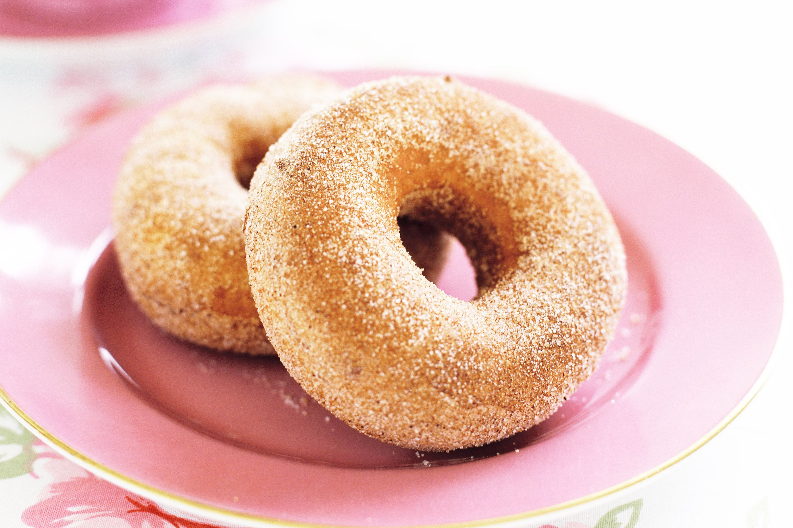

Donuts

While doughnuts are embedded in the history and culture of countries all around the world, these days we seem to associate them with shopping plazas, where their overwhelming sweet and savoury scent distracts even the most stoic shopper. Unfortunately, these doughnuts sometimes sit around for a bit and fall short of the warm and spicy delight that tempted you in the first place. If you’re craving an old-school cinnamon doughnut, you want it fresh from the oil and there's one way to guarantee this. Make your own! For those who are a bit fazed by the idea, this is the cinnamon doughnut recipe for you.
Ingredients
- 490g Flour
- 55g Caster Sugar
- 3tsp Dried Yeast
- Pinch of Salt
- 250ml Heated Milk
- 100g Melted Butter
- 3 Egg Yolks
- Canola Oil
- 215g Caster Sugar (extra)
- 2tsp Cinnamon
Steps
- Combine flour, sugar, yeast and salt in a bowl. Make a well. Mix in milk, butter and egg until dough starts to come together – it may be sticky.
- Knead on a well-floured surface until smooth. Place in a greased bowl. Cover. Prove for 1 1/2 hours or until dough has doubled in size.
- Punch down the dough. Knead on a lightly floured surface for 2 minutes or until smooth. Roll out dough until 1cm thick. Rest dough for 2 minutes.
- Use an 8cm round cutter to cut out discs. Use a 3.5cm round cutter to cut out centres. Place on a lined tray. Set aside for 15 minutes to rise slightly.
- Combine the extra sugar and cinnamon on a tray. Pour enough oil into a large heavy-based saucepan to come two-thirds up the side of the pan. Heat oil to 180°C (see notes). Deep-fry 4-5 doughnuts for 40 seconds each side or until puffed and golden.
- Transfer the doughnuts to the sugar mixture and turn to coat. Repeat, in 3 more batches, with remaining doughnuts.